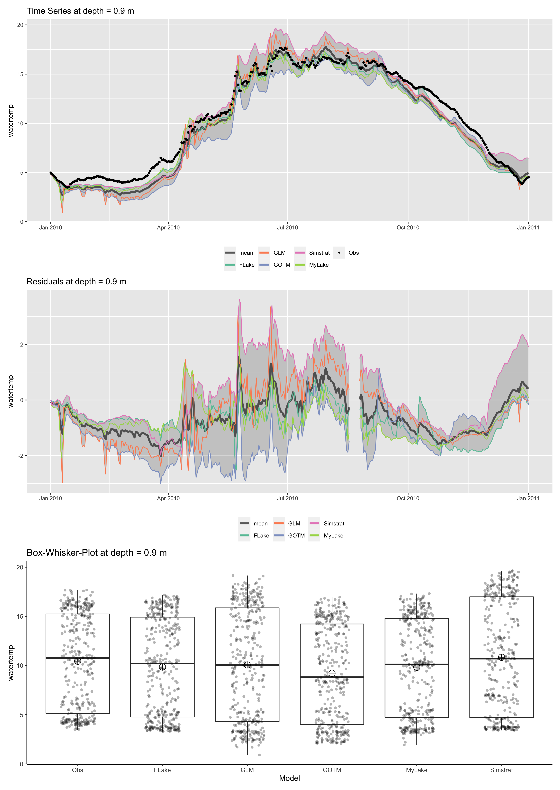
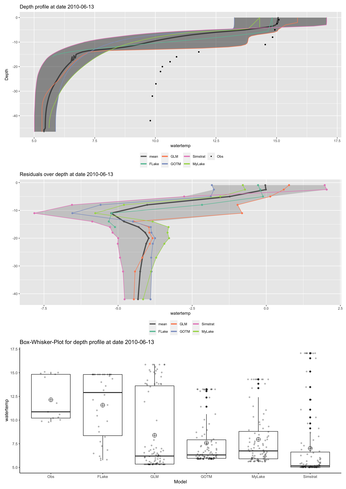
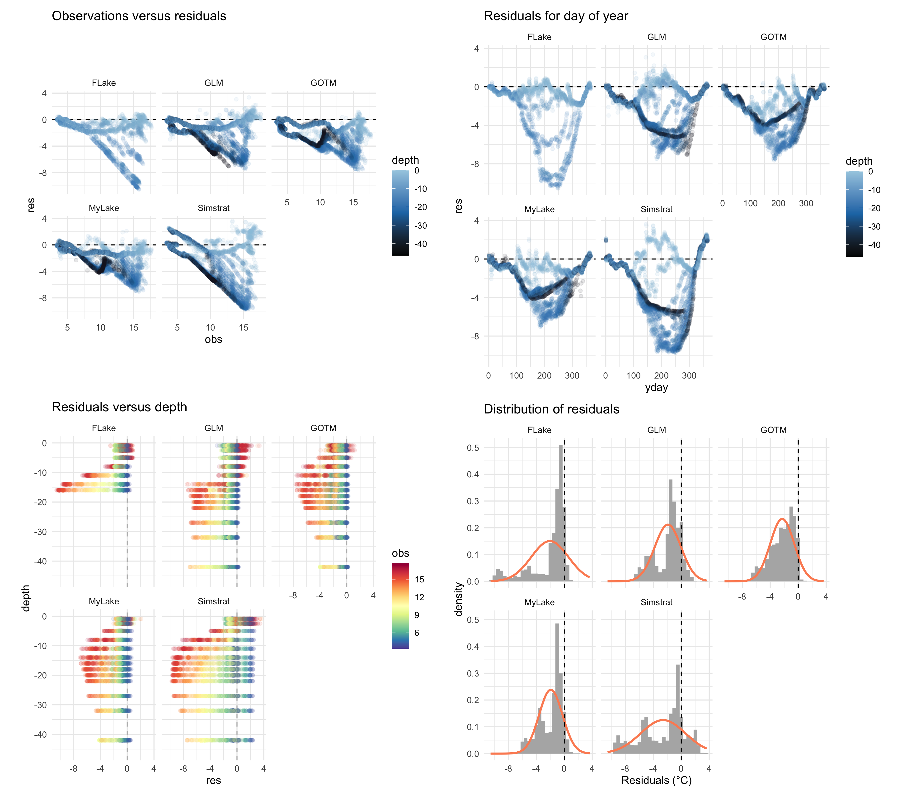
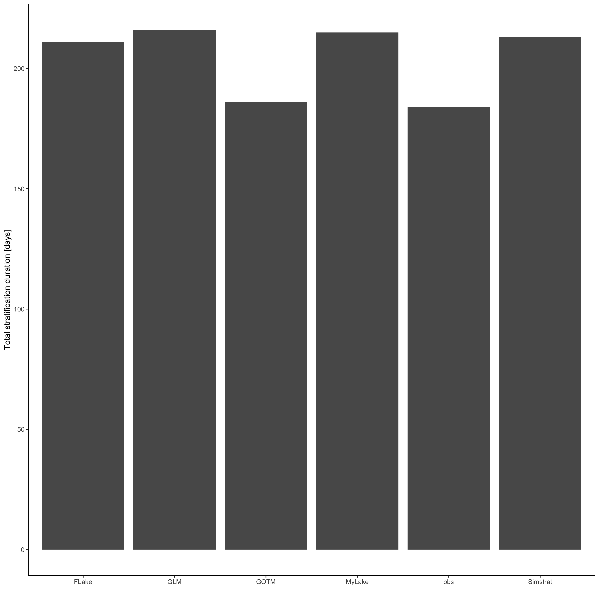

LakeEnsemblR: Basic Use and Sample Applications
johannes.feldbauer@tu-dresden.de
tadhg.moore@dkit.ie
jorrit.mesman@unige.ch
ladwigjena@gmail.com
2025-10-01
Source:vignettes/lakeensemblr-overview.Rmd
lakeensemblr-overview.RmdIncluded models
LakeEnsemblR currently includes the following models: GLM (Hipsey et al. (2019)), FLake (Mironov (2008)), GOTM (Umlauf, Bolding, and Burchard (2005)), Simstrat (Goudsmit et al. (2002)), and MyLake (Saloranta and Andersen (2007)).
Introduction
LakeEnsemblR is an R package that lets you run multiple one-dimensional physical lake models.
The settings for a model run are controlled by one centralised,
“master” configuration file in YAML
format. In this configuration file, you can set all the specifications
for your model run, including start and end time, time steps, links to
meteorological forcing and bathymetry files, etc. The package then
converts these settings to the configuration files required by each
model, through the export_config function. This sets up all
models to run with the settings specified by the user, and the models
are then run through the run_ensemble function. A netcdf
file is created with the outputs of all the models, and the package
provides functions to extract and plot this data.
Part of the design philosophy of LakeEnsemblR is that all input is
given in a standardized format. This entails standard column names
(which includes units), comma-separated ASCII files, and a DateTime
format using the format YYYY-mm-dd HH:MM:SS, for example
2020-04-03 09:00:00. In this document, we will explain what
the required files are and in what format they need to be. We also
advise you to look at the provided example files, and at the templates
provided with the R package (to be found in
package/inst/extdata, or extracted by the function
get_template).
Installation
The code of LakeEnsemblR is hosted on the AEMON-J Github page (https://github.com/aemon-j/LakeEnsemblR), and can be
installed using the devtools package
devtools::install_github("aemon-j/LakeEnsemblR)The package relies on multiple other packages that also need to be installed. Most notably, to run the multiple models, it requires the packages FLakeR, GLM3r, GOTMr, SimstratR, and MyLakeR. These packages run the individual models, and contain ways of running the models for the platforms Windows, MacOS, or Linux, through either executables, or by having the model code in R.
The LakeEnsemblR configuration file
In this section, we go through the LakeEnsemblR configuration file.
This file controls the settings with which the models are run. It is
written in YAML (Yaml Ain’t Markup
Language) format, and can be opened by text-editors such as Notepad or
Notepad++. Although not needed to use LakeEnsemblR, you can read this
file into R with the configr package
(read.config function). Within LakeEnsemblR, we provide the
get_yaml_multiple and input_yaml_multiple
functions to get and input values into this file type.
There is an LakeEnsemblR configuration file provided in the example
dataset in the package
(LakeEnsemblR::get_template("LakeEnsemblR_config")) or you
can download a copy from GitHub here.
Location
The first section is “Location”. Here you specify the name, latitude and longitude, elevation, maximum depth, and initial depth.
You also need to provide a link to the hypsograph (i.e. surface area
per depth) file. As in the rest of the configuration file, all links to
files are relative to the folder argument in the
LakeEnsemblR (from now on: LER) functions (default is the R working
directory). We strongly advise to set the working directory to the
location of the LER config file, and link to the files relative to this
directory (we explain this further in the chapter “Workflow” of this
vignette). For example, if your hypsograph file is called
hypsograph.csv and in the same folder as the LER config
file, the corresponding line in the LER config file would look like
The data needs to be a comma-separated file (.csv) where 0m is the
surface and all depths are reported as positive, in meters. Area needs
to be in meters squared. The column names must be
Depth_meter and Area_meterSquared
Example of data:
Depth_meter,Area_meterSquared
0,3931000
1,3688025
2,3445050
3,3336093.492
4,3225992.455
5,3133491.11
6,3029720
...Time
In the “Time” section, you fill in the start and end date of the
simulation, and the model time step. time_step indicates
the model integration time step, i.e. each time step that the model
performs a calculation.
LakeEnsemblR will work with any time zone, provided that the time
columns in all input files are in the same time zone and there are no
shifts from/to daylight saving time in the files. Of all models, only
GLM requires to know the time zone. In LakeEnsemblR this is
automatically set to UTC. However, this information is only used in
GLM’s albedo_mode 2 and 3, or when GLM’s
rad_mode is set to 5 (i.e. computing shortwave radiation if
this is not provided). In LakeEnsemblR, the default
albedo_mode is 1, and shortwave radiation must be provided,
so providing the timezone is not required. Yet if you are changing
albedo_mode to 2 or 3, make sure you enter your data in
UTC. GOTM also assumes the time to be in UTC, but this is only used when
computing shortwave radiation if it is not provided, which does not
happen when using LakeEnsemblR.
Config files
In this section, you link to the model-specific configuration files.
Templates of these can be found in in the package
(get_template("FLake_config"),
get_template("GLM_config"), etc. all available templates
can be shown using get_template()) or you can download a
copy from GitHub here.
The setup of LakeEnsemblR is such that you will usually not have to
access these files, as most settings are regulated through the LER
“main” config file. However, should you want to change some of the more
specialised settings in each model, that is possible.
Observations
If you have observations of water temperature, ice cover or water level, you can fill them in here. These will be used in plotting, and in case of water temperature potentially in initialising the temperature profile at the start of the simulation (see next section).
For water temperature, the data needs to be a comma separated values
(.csv) file where the datetime column is in the format
YYYY-mm-dd HH:MM:SS. Depths are positive and relative to
the water surface. Water temperature is in degrees Celsius. The column
names must be datetime, Depth_meter
and Water_Temperature_celsius (templates available).
Example of data:
datetime,Depth_meter,Water_Temperature_celsius
2004-01-05 00:00:00,0.9,6.97
2004-01-06 00:00:00,2.5,6.71
2004-01-07 00:00:00,5,6.73
2004-01-08 00:00:00,8,6.76
...For ice height, the data must also be a comma separated values (.csv)
file, with datetime column in format YYYY-mm-dd HH:MM:SS
and has the column name datetime. Ice height must be
provided in meters and the column must be named
Ice_Height_meter.
Example of data:
datetime, Ice_Height_meter
2004-01-01 00:00:00,0.3
2004-01-02 00:00:00,0.3
2004-01-03 00:00:00,0.35
...For water level, the data must also be a comma seperated values
(.csv) file, with datetime column in format
YYYY-mm-dd HH:MM:SS and has the column name
datetime. Water level must be provided in meters above
ground and the column must be named Water_Level_meter.
Example of data:
datetime, Water_Level_meter
2004-01-01 00:00:00,45.4
2004-01-02 00:00:00,45.6
2004-01-03 00:00:00,45.7
...Input
In the “Input” section, you give information about the initial temperature profile, meteorological forcing, the light extinction coefficient, and whether the ice modules should be used.
Firstly, you can give the initial temperature profile with which to
start the simulation (link to .csv file with headers
Depth_meter, Water_Temperature_celsius, template available
using get_template("Initial temperature profile")). If you
leave it empty, the water temperature observations will be used,
provided you have an observation on the starting time of your
simulation.
Secondly, you give the link to the file with your meteorological
data. The data needs to be a comma separated values (.csv) file where
the datetime column is in the format YYYY-mm-dd HH:MM:SS.
See Table 1 for the list of variables, units and column names. The
time_zone setting has not been implemented yet.
| Description | Units | Column.Name | Status |
|---|---|---|---|
| Downwelling longwave radiation | W/m2 | Longwave_Radiation_Downwelling_wattPerMeterSquared | If not provided,it is calculated internally from air temperature, cloud cover and relative humidity/dewpoint temperature |
| Downwelling shortwave radiation | W/m2 | Shortwave_Radiation_Downwelling_wattPerMeterSquared | Required |
| Cloud cover |
|
Cloud_Cover_decimalFraction | If not provided,it is calculated internally from air temperature, short-wave radiation, latitude, longitude, elevation and relative humidity/dewpoint temperature |
| Air temperature | °C | Air_Temperature_celsius | Required |
| Relative humidity | % | Relative_Humidity_percent | If not provided,it is calculated internally from air temperature and dewpoint temperature |
| Dewpoint temperature | °C | Dewpoint_Temperature_celsius | If not provided,it is calculated internally from air temperature and relative humidity |
| Wind speed at 10m | m/s | Ten_Meter_Elevation_Wind_Speed_meterPerSecond | Either wind speed or u and v vectors is required |
| Wind direction at 10m | ° | Ten_Meter_Elevation_Wind_Direction_degree | Not required, but if provided u and v vectors are calculated internally |
| Wind u-vector at 10m | m/s | Ten_Meter_Uwind_vector_meterPerSecond | Either wind speed or u and v vectors is required |
| Wind v-vector at 10m | m/s | Ten_Meter_Vwind_vector_meterPerSecond | Either wind speed or u and v vectors is required |
| Precipitation | mm/day | Precipitation_millimeterPerDay | Not strictly required but is important for mass budgets in some models. |
| Precipitation | mm/hr | Precipitation_millimeterPerHour | Different unit option for precipitation. |
| Rainfall | mm/day | Rainfall_millimeterPerDay | If not provided,it is calculated internally from precipitation |
| Rainfall | mm/hr | Rainfall_millimeterPerHour | Different unit option for rainfall. |
| Snowfall | mm/day | Snowfall_millimeterPerDay | If not provided, it is calculated internally from rain or precipitation when air temperature < 0 degC |
| Snowfall | mm/hr | Snowfall_millimeterPerHour | Different unit option for snowfall. |
| Sea level pressure | Pa | Sea_Level_Barometric_Pressure_pascal | Not required |
| Surface level pressure | Pa | Surface_Level_Barometric_Pressure_pascal | Is calculated from sea level pressure if not provided |
| Vapour pressure | mbar | Vapour_Pressure_milliBar | If not provided,it is calculated internally from air temperature and relative humidity/dewpoint temperature |
Next you can either give a value for Kw (light extinction
coefficient) in 1/m, or give the link to a file, where you can vary Kw
over time (template available using
get_template("Light extinction")). The file must be a
comma-separated file (.csv) with the two columns datetime
and Extinction_Coefficient_perMeter containing the date in
the format (YYYY-mm-dd HH:MM:SS) and corresponding Kw value
in 1/m.
Lastly, you can specify if you want to use the ice modules that are present in some of the models.
Inflows
Specify if you want to add inflows to your simulation. If yes, you
need to link to a file with the inflow data. The data needs to be a
comma separated values (.csv) file where the datetime column is in the
format YYYY-mm-dd HH:MM:SS. Flow discharge, water
temperature, and salinity need to be specified. The column names
must be datetime,
Flow_metersCubedPerSecond,
Water_Temperature_celsius, and
Salinity_practicalSalinityUnits (template available using
get_template("Inflow") ). If you have multiple inflows, you
should add suffixes “_1”, “_2”, etc. The fix_wlvl argument lets you fix
the water level in the GOTM model, to reproduce the behaviour of an
earlier version of LakeEnsemblR.
Example of inflow data:
datetime,Flow_metersCubedPerSecond,Water_Temperature_celsius,Salinity_practicalSalinityUnits
2005-01-01 00:00:00,5.62,6.96,0.00
2005-01-02 00:00:00,2.32,6.00,0.00
2005-01-03 00:00:00,1.77,8.44,0.00
2005-01-04 00:00:00,4.64,7.27,0.00
...Outflows
For the models that allow changing water level (at this moment GLM,
GOTM, Simstrat) outflows can be set in this section by setting
use to true. The outflow discharge must be provided in
daily resolution in a .csv file specified by file. The file
must contain a date column in YYYY-mm-dd HH:MM:SS format
called datetime and for every outflow (specified by
number_outflows) one column titled
Flow_metersCubedPerSecond, if more than one outflow are
defined the outflow columns need to be numbered like this:
Flow_metersCubedPerSecond_1,
Flow_metersCubedPerSecond_2. For each outflow the depth of
the outflow must be specified as height in meters above the lake bottom,
or if the outflow is a surface outflow it can be set to “-1”.
Output
In the “Output” section, you specify how the output should look like. This can be “netcdf” or “text”, which will generate a series of csv files in rLakeAnalyzer format. You can specify the depth interval of the output, and the frequency. Also specify what variables should be in the output (currently “temp”, “ice_height”, “salt”, “dens”, and “w_level”).
Scaling factors
In the “Scaling factors” (scaling_factors) section scaling factors to be applied to meteorological input as well as to inflows and outflows, either for all models or model-specific can be defined. If the section is not specified, no scaling is applied. Using “all” scaling factors that should be applied to all models can be defined, otherwise model specific scaling can be supplied by using the model name. If both “all” and model-specific are specified for a certain model, only the model-specific scaling is applied. If there are multiple inflows or outflows a list of scaling parameters for each of them must be provided (see example).
Model parameters
All models in LakeEnsemblR have different parameterisations. In this section, you can set the value of any parameter in one of the model-specific configuration files.
You can give either only the name of the parameter, but if needed you
can also provide the name of the section in which the parameter occurs,
separated by a /. For example for GOTM’s k_min
parameter:
or:
Calibration
This section is used when calibrating the models. In the package, the
cali_ensemble function runs the calibration. For all three
methods model specific parameters and scaling factors for the input
meteorological forcing can be calibrated. In any case the parameters to
be calibrated are definded in the master control .yaml file. The meteo
scalings are defined in the met: section and the model
specific parameters in sections with the corresponding model names
e.g. MyLake:. The meteo scaling names must be the short
names for the meteo variables, which are defined in the
met_var_dic data and can be inspected using
print(met_var_dic). The model specific names must be the
parameter name as given in the model specific configuration file
(e.g. gotm.yaml) combined with the lowest section name in which the
parameter can be found and separated by a slash “/”
(e.g. turb_param/k_min). An example of how the calibration section could
look like is given below:
calibration: # Calibration section # Calibration section
met: # Meteo scaling parameter
wind_speed: # Wind speed scaling
lower: 0.5 # lower bound for wind speed scaling
upper: 2 # upper bound for wind speed scaling
initial: 1 # initial value for wind speed scaling
log: false # log transform scaling factor
swr: # shortwave radiation scaling
lower: 0.5 # lower bound for shortwave radiation scaling
upper: 1.5 # upper bound for shortwave radiation scaling
initial: 1 # initial value for shortwave radiation scaling
log: false # log transform scaling factor
Simstrat: # Simstrat specific parameters
a_seiche:
lower: 0.0008 # lower bound for parameter
upper: 0.003 # upper bound for parameter
initial: 0.001 # initial value for parameter
log: false # log transform scaling factor
MyLake: # MyLake specific parameters
Phys.par/C_shelter:
lower: 0.14 # lower bound for parameter
upper: 0.16 # upper bound for parameter
initial: 0.15 # initial value for parameter
log: false # log transform scaling factor
GOTM: # GOTM specific parameters
turb_param/k_min:
lower: 5E-4 # lower bound for parameter
upper: 5E-6 # upper bound for parameter
initial: 1E-5 # initial value for parameter
log: true
GLM: # GLM specific parameters
mixing/coef_mix_hyp:
lower: 0.1 # lower bound for parameter
upper: 2 # upper bound for parameter
initial: 1 # initial value for parameter
log: false # log transform scaling factor
FLake: # FLake specific parameters
c_relax_C:
lower: 0.00003 # lower bound for parameter
upper: 0.3 # upper bound for parameter
initial: 0.003 # initial value for parameter
log: true # log transform scaling factorAn example on how to run the calibration see section 5.7 “Model calibration”.
Workflow
In this chapter, we quickly show you how your workflow with LakeEnsemblR could look like.
Setting up a directory
First, you make an empty directory for the simulations of a specific
lake. In this directory, you place the LakeEnsemblR configuration file,
and the necessary LakeEnsemblR-format input files (e.g. meteorology,
inflow, water temperature observations, hypsograph). Within this
directory, you create empty folders for each model (FLake, GLM, GOTM,
Simstrat, MyLake), and in here you place the model-specific
configuration files, corresponding the information you put in the
config_files section in the LER config file.
Export_config
Then, you run the export_config function, which exports
the settings in the LER configuration file to the model-specific
configuration files. It is possible to run parts of this function, such
as export_meteo, if the meteorological forcing is the only
thing you changed, but usually you will run
export_config.
Optional: changes in model-specific directories
Optionally, you can now go into the model-specific configuration
files and make further changes. This should not be needed for regular
simulations, especially since you can control parameters in the
model_parameters section of the LER config file, but the
option is there. For example, if you want to change the depth of the
inflow in the Simstrat model, you could go to the Simstrat folders and
make these changes manually (or through a script you wrote). It speaks
for itself that these changes should be done only if you are sure this
is what you need, and LakeEnsemblR does not provide further support for
this.
Run_ensemble
The next step would be to call run_ensemble, which runs
all the models. A new folder called “output” is created, in which a
netcdf-file will be put with all the results from the model runs. If you
are interested, each model sub-folder will also have an “output” folder,
with the model-specific model output.
Example model run
See below for an example run, and some post-processing of the data.
# Install packages - Ensure all packages are up to date
devtools::install_github("aemon-j/GLM3r", ref = "v3.1.1")
devtools::install_github("USGS-R/glmtools", ref = "ggplot_overhaul")
devtools::install_github("aemon-j/FLakeR", ref = "inflow")
devtools::install_github("aemon-j/GOTMr")
devtools::install_github("aemon-j/gotmtools")
devtools::install_github("aemon-j/SimstratR")
devtools::install_github("aemon-j/MyLakeR")
devtools::install_github("aemon-j/LakeEnsemblR")
# Load libraries
library(LakeEnsemblR)
library(ggplot2)
# Set working directory with example data from Lough Feeagh, Ireland
template_folder <- system.file("extdata/feeagh", package= "LakeEnsemblR")
dir.create("example") # Create example folder
file.copy(from = template_folder, to = "example", recursive = TRUE)
setwd("example/feeagh") # Change working directory to example folder
# Set models & config file
model <- c("GLM", "FLake", "GOTM", "Simstrat", "MyLake")
config_file <- "LakeEnsemblR.yaml"
# 1. Example - creates directories with all model setup
export_config(config_file = config_file, model = model, folder = ".")
# 2. Run ensemble lake models
wtemp_list <- run_ensemble(config_file = config_file,
model = c("FLake", "GLM", "GOTM", "Simstrat", "MyLake"),
return_list = TRUE)Plotting the model outputs is very easy using the
plot_heatmap() function:
g1 <- plot_heatmap("output/ensemble_output.nc")
ggsave("output/model_ensemble_watertemp.png", g1, dpi = 300,width = 384,height = 300,
units = "mm")Post-processing
Once LakeEnsemblR did successfully run all lake models, you can either extract the output data from the netcdf file for custom analysis and plotting, or use post-processing scripts for an initial look at the output.
Quick post-processing
Now that the model simulations are finished, you can extract the data
with load_var, or plot it with plot_ensemble.
You can extract data from the netcdf file to do any further analysis.
The ncdf4 R package supports working with netcdf data in R,
and the PyNcView software (https://sourceforge.net/projects/pyncview/) can be used
to look at netcdf output.
# Import the LER output into your workspace
ens_out <- "output/ensemble_output.nc"
# Plot depth and time-specific results
p <- plot_ensemble(ncdf = ens_out, model = c("FLake", "GLM", "GOTM", "Simstrat", "MyLake"),
depth = 0.9, var = "temp",
boxwhisker = TRUE, residuals = TRUE)
# Take a look at the model fits to the observed data
calc_fit(ncdf = "output/ensemble_output.nc",
model = c("FLake", "GLM", "GOTM", "Simstrat", "MyLake"),
var = "temp")
$FLake
rmse nse r bias mae nmae
1 3.353107 0.6522126 0.6448119 -2.048613 2.090902 0.1863813
$GLM
rmse nse r bias mae nmae
1 2.671799 0.5899169 0.8976564 -2.078693 2.116857 0.2334367
$GOTM
rmse nse r bias mae nmae
1 2.076912 0.7515084 0.9373982 -1.642189 1.691141 0.1990019
$Simstrat
rmse nse r bias mae nmae
1 2.517848 0.6347966 0.8378958 -1.237562 1.983922 0.2224387
$MyLake
rmse nse r bias mae nmae
1 2.548408 0.6258777 0.9059941 -1.922304 1.958271 0.1946865
$ensemble_mean
rmse nse r bias mae nmae
1 2.385461 0.6721914 0.9118315 -1.781649 1.874828 0.1992386
# Take a look at the model performance against residuals, time and depth
plist <- plot_resid(ncdf = ens_out,var = "temp",
model = c('FLake', 'GLM', 'GOTM', 'Simstrat', 'MyLake'))
Further custom post-processing
# Load post-processed output data into your workspace
analyse_df <- analyse_ncdf(ncdf = ens_out, model = model, spin_up = NULL, drho = 0.1)
# Example plot the summer stratification period
strat_df <- analyse_df$strat
p <- ggplot(strat_df, aes(model, TotStratDur)) +
geom_col() +
ylab("Total stratification duration [days]") +
xlab("") +
theme_classic()
ggsave("output/model_ensemble_stratification.png", p, dpi = 300, width = 284,
height = 284, units = "mm")
Adding several model runs to a single netcdf file
The run_ensemble function allows to add different model
runs to a single netcdf file. This is done by setting the argument
add = TRUE. Only model runs that go over the same time
period and use the same time steps can be combined to a single netcdf
file. Using this functionality e.g. model runs with different
parametrizations can be ran and compared. Many diagnostic functions like
calc_fit or plot_ensemble have two additional
arguments dim and dim_index to select which
dimension should be used. The argument dim can either be
“model” or “member” and dim_index then gives the index of
the other dimension to be used, e.g. if the netcdf file contains 3
different ensemble runs (member) with the two models “FLake” and “GLM”
calc_fit("ncfile.nc", model = c("FLake", "GLM"), dim = "model", dim_index = 2)
calculates the model performance of both model for the second ensemble
run (dim_index = 2). Whereas,calc_fit("ncfile.nc", model = c("FLake", "GLM"), dim = "member", dim_index = 2)
calculates the performance of all model runs (members) of the GLM runs
(the second model).
Model calibration
LakeEnsemblR includes some tools for automatic model calibration
which are included in the cali_ensemble() function. The
function profides three methods:
- method “LHC”: Lathin hypercube calibration
- method “MCMC”: Markov Chain Monte Carlo simulation using the
modMCMCfunction from theFMEpackage (Soetaert and Petzoldt (2010)) - method “modFit”: model fitting using one of the algorithms provided
in the
modFitfunction from theFMEpackage (Soetaert and Petzoldt (2010))
For details on the structure of the calibration section in the yaml config file see section 4.11.
calibration: # Calibration section # Calibration section
met: # Meteo scaling parameter
wind_speed: # Wind speed scaling
lower: 0.5 # lower bound for wind speed scaling
upper: 2 # upper bound for wind speed scaling
initial: 1 # initial value for wind speed scaling
log: false # log transform scaling factor
swr: # shortwave radiation scaling
lower: 0.5 # lower bound for shortwave radiation scaling
upper: 1.5 # upper bound for shortwave radiation scaling
initial: 1 # initial value for shortwave radiation scaling
log: false # log transform scaling factor
Simstrat: # Simstrat specific parameters
a_seiche:
lower: 0.0008 # lower bound for parameter
upper: 0.003 # upper bound for parameter
initial: 0.001 # initial value for parameter
log: false # log transform scaling factor
MyLake: # MyLake specific parameters
Phys.par/C_shelter:
lower: 0.14 # lower bound for parameter
upper: 0.16 # upper bound for parameter
initial: 0.15 # initial value for parameter
log: false # log transform scaling factor
GOTM: # GOTM specific parameters
turb_param/k_min:
lower: 5E-6 # lower bound for parameter
upper: 5E-4 # upper bound for parameter
initial: 1E-5 # initial value for parameter
log: true
GLM: # GLM specific parameters
mixing/coef_mix_hyp:
lower: 0.1 # lower bound for parameter
upper: 2 # upper bound for parameter
initial: 1 # initial value for parameter
log: false # log transform scaling factor
FLake: # FLake specific parameters
c_relax_C:
lower: 0.00003 # lower bound for parameter
upper: 0.3 # upper bound for parameter
initial: 0.003 # initial value for parameter
log: true # log transform scaling factorThe calibration process can then be run using the
cali_ensemble() function. Methods “LHC” and “MCMC” will
write intermediate results to .csv text files in the folder specified by
the out_f argument. It is possible to parallelize the
calibration procedure using the parallel argument. This
will distribute the calibration of the models to different cores. It is
worth noting that in the current state the bottle neck for the
computation speed is running MyLake (as it is written in R and
significantly slower than the other four models).
You can calibrate any parameter you like. However, as a guideline for users that are not familiar with some of these models, here are some model-specific parameters that have been calibrated in previous studies:
- FLake: depth_w_lk, extincoef_optic, c_relax_C, fetch_lk, latitude_lk, depth_bs_lk, T_bs_lk, albedo, initial conditions (Salgado and Le Moigne (2010)) (Bernhardt et al. (2012)) (Layden, MacCallum, and Merchant (2016))
- GLM: meteorological scaling factors (wind_factor, sw_factor, lw_factor), strmbd_slope, Kw, min_layer_thick, max_layer_thick, coef_mix_conv, coef_wind_stir, coef_mix_shear, coef_mix_turb, coef_mix_KH, coef_mix_hyp (Bueche, Hamilton, and Vetter (2017)) (Bruce et al. (2018)) (Hipsey et al. (2019))
- GOTM: Scaling factors for heat, wind speed, and shortwave radiation, k_min, g2 (Ayala, Moras, and Pierson (2020))
- Simstrat: a_seiche, f_wind, p_radin, p_albedo, q_nn, c10, cd (peeters_2002) (Gaudard et al. (2019))
- MyLake: (Physical parameters only:) C_shelter, swa_b1 (Less sensitive: dz and I_scT, and Kz_ak) (Saloranta (2006))
LHC method
The “LHC” method will sample a number of parameter sets definded by
the num argument within the bounds definded by
upper and lower in the master config file. For
each model given in the model argument a set of parameters
consisting of the meteo scaling factors and the model spüecific
parameters will be sampled and the model will be run for each set,
calculating model performance indices for each run. Both the parameter
set and the model results will be written to the out_f
folder. By default the model performance indices are:
- rmse: root mean squared error
- nse: Nash-Sutcliff model efficiency
- r: Pearson corelation coefficient
- bias: the mean error
- nmae: normalized mean absolute error
But you can provide your own function to calculate model performances
using the qualfun argument. The provided function must take
the two arguments: observed data, and simulated data, both are
data.frames with first column being datetime and then columns with depth
specific values (lokking like the return value of the
get_output() function).
The function returns a list with an entry for every model, containing the path to the files containing the parameter sets and the model performance indices for every model run.
# calibrate the
cali_ensemble(config_file, model = c("GLM", "GOTM", "FLake", "MyLake", "Simstrat"),
cmethod = "LHC", num = 300, out_f = "calibration")MCMC method
The “MCMC” method utalizes the modMCMC() function from
the FME package (Soetaert and
Petzoldt (2010)), using an adaptive Metropolis algorithm and
including a delayed rejection procedure. Internally the function
calculates the sum of squares, which is equivalent to -2 log(likelihood)
for a Gaussian likelihood and prior. The MCMC will run num
evaluations for every model. The outcome of every model call during the
MCMC simulation is written to a model specific file in the
out_f folder, containing the parameter values and the sum
of squares of the residuals. Additional arguments can be supplied to
modMCMC() using the ellipsis argument
(...).
The function returns a list with an entry for every model, containing
the return value of modMCMC() for every model run.
# calibrate the
cali_ensemble(config_file, model = c("GLM", "GOTM", "FLake", "MyLake", "Simstrat"),
cmethod = "MCMC", num = 3000, out_f = "calibration")modFit method
The “modFit” method utalizes the modFit() function from
the FME package (Soetaert and
Petzoldt (2010)), Fitting a model to data. Additional arguments
can be supplied to modFit() using the ellipsis argument
(...).
The function returns a list with an entry for every model, containing
the return value of modFit() for every model run.
# calibrate the models using a Nelder-Mead algorithm
cali_ensemble(config_file, model = c("GLM", "GOTM", "FLake", "MyLake", "Simstrat"),
cmethod = "modFit", out_f = "calibration", method = "Nelder-Mead")Citation
See
citation("LakeEnsemblR")on how to cite this project.
Although this information is included when running the function above, we would like to repeat that in case you use and cite LakeEnsemblR, you will also need to cite the individual models that you used in your simulations.